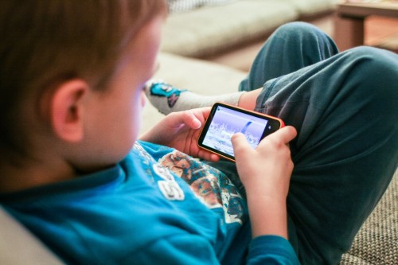

မိုဘိုင်းဖုန်းတွေကနေထွက်တဲ့ ဓါတ်ရောင်ခြည် Radiation

မိုဘိုင်းဖုန်းတွေကနေထွက်တဲ့ ဓါတ်ရောင်ခြည် Radiation တွေက လူတွေရဲ့ ကျန်းမာရေးအပေါ် ဘယ်လို သက်ရောက်စေမှုရှိတယ်ဆိုတာဟာ လတ်တလော စိတ်ဝင်စားမှုအကောင်း ဆုံးနဲ့ လေ့လာစမ်း သပ်မှုတွေပြု လုပ်နေကြတဲ့အရာတစ်ခုဖြစ်ပါတယ် ။
ဘာကြောင့်လည်းဆိုတော့ တိုးတက်လာတဲ့ နည်းပညာခေတ်ကြီးထဲမှာ မိုဘိုင်းဖုန်း အသုံးပြုမှုဟာ တကမ္ဘာလုံး ( ၂၀၀၉ ခုနှစ် ဂျွန်လအထိဆိုရင် 4.3 billion တောင်ရှိပါတယ် ) များပြားလာတဲ့အတွက်ဖြစ်ပါတယ် ။ မိုဘိုင်းဖုန်းတွေဟာ
သေးငယ်တဲ့ လှိုင်းနှုန်း Microwave မှာ Electromagnetic radiation တွေကို အသုံးပြုပါတယ် ။ တခြား ၀ါယာ လက် စနစ်တွေဖြစ်တဲ့ Data Communication networks တွေမှာလည်း ဒီလိုအလားတူ radiation
တွေကို အသုံးပြုကြပါတယ် ။
WHO လို့ခေါ်တဲ့ ကမ္ဘာ့ကျန်းမာရေးအဖွဲ့ကြီးက မိုဘိုင်းဖုန်း ကထွက်တဲ့ ဓါတ်ရောင်ခြည်ကို IARC scale ပေါ် မူတည်ပြီးတော့ Group 2B ( ကင်ဆာဖြစ်နိုင်ခြေရှိသော ) အဆင့်လို့ သတ်မှတ်ထားပါတယ် ။ ဘာကိုဆိုလိုသ လဲဆိုတော့ ကင်ဆာဖြစ်နိုင်ချေရှိခြင်း\
Carcinogenicity ဟာ မိုဘိုင်းဖုန်းတွေကို အချိန်ကြာမြင့်စွာ အသုံးပြုခြင်း နဲ့များများ အသုံးပြုခြင်းတို့ဟာ ကင်ဆာ နဲ့ဆက်နွယ်မှုရှိနေတယ်ဆိုတာပါပဲ ။ ဒါကြောင့်အချို့သော နိုင်ငံတွေမှာ ဓါတ်ရောင်ခြည် အကြံပေးအဖွဲ့တွေက မြို့နေလူထုထဲမှာ ဒီအန္တရာယ်ကိုလျော့ချဖို့အတွက် precautionary approach
လို့ခေါ်တဲ့ မဖြစ်ခင်ကြိုတင်ကာကွယ်သတိထားနည်းလမ်းကို စတင်ကျင့်သုံးနေကြပြီဖြစ်ပါတယ် ။
များစွာသော လေ့လာစမ်းသပ်မှုတွေကနေပြီး မိုဘိုင်းဖုန်းတွေရဲ့ ဓါတ်ရောင်ခြည်တွေကနေ ကျန်းမာရေးကို ဘယ်လိုဆိုးကျိုးတွေ ရှိသလဲဆိုတာ လေ့လာစမ်းသပ်မှုတွေပြုလုပ်ခဲ့ကြပါတယ် ။ ဒီလိုလေ့လာစမ်း သပ်မှုတွေ ကို လည်း များစွာသော သိပ္ပံဆိုင်ရာ ကော်မတီတွေကနေပြီး ဖြစ်နိုင်ခြေရှိမှုအကုန်လုံး ကို ပြန် လည်လေ့ လာဆန်းစစ်မှုတွေပြုလုပ်ခဲ့ကြပါတယ် ။
လတ်တလော accessment တစ်ခုကတော့ ၂၀၀၇ ခုနှစ်မှာပြု လုပ်ခဲ့တဲ့ European Commission Scientific Committee on Emerging and Newly Identified Health Risks ( SCENIHR ) ပဲဖြစ်ပါတယ် ။ မိုဘိုင်းဖုန်းကနေထုတ်လွှတ်လိုက်တဲ့ ရေဒီယို လှိုုင်းတွေရဲ့ တချို့ကို လူတွေရဲ့ဦးခေါင်းကနေ
စုပ်ယူပါတယ် ။ ရေဒီယိုဝေ့ဖ်တွေဟာ GSM ဟမ်းဆက်မှာဆိုရင် peak power - 2 watt ရှိပြီး US analogue phone တွေမှာတော့အမြင့်ဆုံး ထုတ်လွှတ်တဲ့ စွမ်းအင်ဟာ 3.6 watt တောင် ရှိပါတယ် ။ တခြား မိုဘိုင်းနည်းပညာတွေဖြစ်တဲ့ CDMA2000 နဲ့ D-AMPS တွေကတော့ ဒီထက်ပိုနည်းတဲ့ စွမ်းအင်ကို အသုံးပြုကြပြီး 1 watt
အောက်မှာပဲရှိပါတယ် ။ အမြင့်ဆုံးဘယ်လောက်ထိ စွမ်းအင်ထုတ်သလဲဆိုတာကတော့ တိုင်းပြည်တစ်ပြည်မှာသုံးစွဲနေတဲ့ mobile phone standard အပေါ်မူတည်နေပါတယ် ။ USA မှာဆိုရင်တော့ FCC လို့ခေါ်တဲ့ Federal Communications Commission ကနေပြီး SAR သတ်မှတ်မှုကို 1.6 W/kg လို့ သတ် မှတ်ထားပြီး ဦးခေါင်းထဲက
တစ်ရှူးတွေထဲမှာ ပျမ်းမျှ တစ်ရှူး ၁ ဂရမ်ကို လွှမ်းမိုး သက်ရောက်မှုရှိစေပါတယ် ။
SAR ဆိုတာကတော့ Specific Absorption Rate ဖြစ်ပြီး လူခန္ဓာကိုယ်ကနေ ဓါတ်ရောင်ခြည်ကို ဘယ်လောက် ထိ စုပ်ယူသလဲဆိုတာကို တိုင်းတာတဲ့စနစ်တစ်ခုဖြစ်ပါတယ် ။ ဥရောပရဲ့ FCC ကနေ သတ်မှတ်မှုကတော့ 2 W/kg ဖြစ်ပြီး တစ်ရှူးတွေရဲ့ ၁၀ ဂရမ်ကို လွှမ်းမိုးမှုရှိပါတယ် ။
အပူချိန်ပြောင်းလဲမှု ( Thermal Effects)
မိုကခရိုဝေ့ဖ် ဓါတ်ရောင်ခြည်တွေရဲ့ ကောင်းကောင်းနားလည်နိုင်တဲ့အချက်ကတော့ dielectric heating ဖြစ်ပြီး Dielectirc material တွေဖြစ်တဲ့ သက်ရှိတစ်ရှူးတွေဟာ Electromagnetic field ထဲမှာဆိုရင် Polar molecules တွေ လည့်ပတ်နေခြင်းကြောင့် အပူပေးခြင်းခံနေရပါတယ် ။ ဆဲလ်ဖုန်းတစ်လုံးကိုသုံးနေတဲ့ လူတစ်ယောက်မှာဆိုရင်
ဒီလို heating effect ကို ဦးခေါင်းရဲ့မျက်နှာပြင်မှာ တွေ့နိုင်ပြီး အပူချိန် တက်လာခြင်းကို ဖြစ်စေပါတယ် ။ ဦးနောက်ထဲမှာရှိတဲ့ သွေးလည်ပတ်မှုစနစ်ဟာ local blood flow များလာ တာကြောင့် မလိုလားအပ်ပဲ အပူချိန်မြင့်မားလာခြင်းနဲ့ ရင်ဆိုင်နေရပါတယ် ။
Blood Brain Barrier Effects
Lund Univerisity မှ ဆွီဒင်လေ့လာသူများဖြစ်တဲ့ Salford, Brun, Persson , Edberhardt နဲ့ Malmgren ဆိုသူတို့က ကြွက်တွေရဲ့ ဦးနှောက်ထဲမှာ ဒီ မိုက်ခရိုဝေ့ဖ် ဓါတ်ရောင်ခြည်တွေကိုလေ့လာမှုပြုလုပ်ခဲ့ကြပါတယ် ။ အဲဒီအခါ Blood - brain barrier ( ဦးနှောက်နှင့် သွေး ကြာ းသယ်ယူပို့ဆောင်ပေးသူ ) တွေကနေတဆင့် စိမ့်ဝင်ပျံ့နှ့ံပြီး
albumin လို့ခေါ်တဲ့ ပရိုတိန်းဓါတ်တွေ ထွက်ရှိနေခြင်း (Leakage) ကို ရှာတွေ့ခဲ့ကြပါတယ် ။ ဒါကို ထပ်မံသက်သေပြဖို့အတွက် Allan Frey, Oscar and Hawkins ,Albert နဲ့ Kerns ဆိုုသူတို့က Blood Brain Barrier ကို စမ်းသပ်လုပ်ဆောင်ခဲ့ကြပါတယ် ။
အကြံပေးချက်များ
၂၀၁၁ ခုနှစ် ကမ္ဘာ့ကျန်းမာရေးအဖွဲ့ကြီးကနေ ပြုလုပ်ထားတဲ့ WHO International Agancy for Research on Cancer မှာ ကြေငြာထားတာကတော့ မိုဘိုင်းဖုန်းတွေကနေထွက်တဲ့ EMF ( Electromagnetic fields ) တွေနဲ့ တခြားအရာတွေက လူတွေကို ကင်ဆာဖြစ်နိုင်ခြေ "possibly carcinogenic to humans" ရှိတယ်
လို့ ဖော်ပြထားပါတယ် ။ ပြီးတော့ အကြံပေးချက်တချို့ကိုလည်းရေးသားထားပါသေးတယ်
- ဦးခေါင်းပိုင်းကို ဓါတ်ရောင်ခြည်တိုက်ရိုက်မသက်ရောက်အောင်လို့ Hands-free သုံးစွဲပါ ။
- ခန္ဓာကိုယ်ကနေ တတ်နိုင်သမျှ ဖုန်းကို ဝေးဝေးမှာထားပါ ။
- ပြင်ပ အင်တာနာ မပါပဲနဲ့ကားထဲမှာ တယ်လီဖုန်းအသုံးမပြုပါနဲ့ ။
ကဲ ဒီလောက်ဆိုရင်တော့ မိုဘုန်းဖုန်းကနေထွက်တဲ့ EMF နဲ့ Micro wave တွေရဲ့ အန္တရာယ်ကို ရှင်းရှင်းလင်း လင်းသိကြပြီလို့ထင်ပါတယ် ။ အားလုံးပဲ နီးစပ်ရာကို မျှဝေပေးကြပါ ။ တတ်နိုင်သမျှ ကာကွယ်တဲ့ နည်း လမ်းတွေနဲ့ အန္တရာယ်တွေကို ရှောင်ရှားကြပါစို့ ။
သက်တန့်ချို